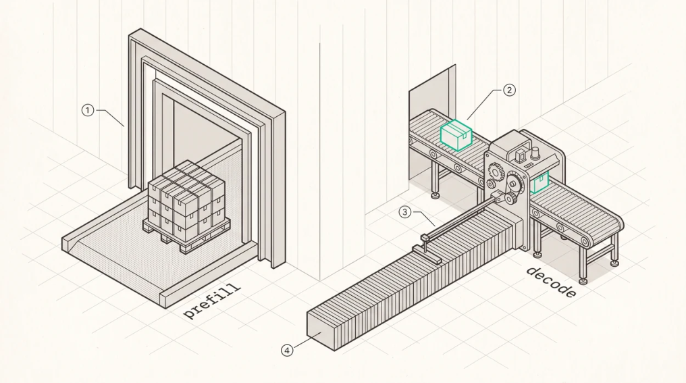
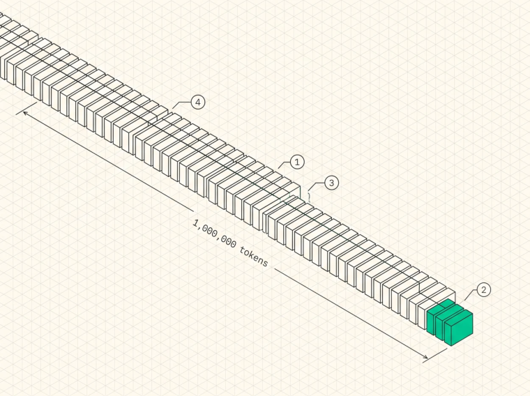

Why Inference Is Different
The two phases of generation
Ask a language model to finish a sentence and the work splits into two phases that want opposite things from the hardware.
Prefill processes the prompt. Every input token is available at once, so the computation is dense matrix multiplication and the machine can be kept genuinely busy. Decode generates the new tokens one at a time, each one attending to everything that came before it, and the per-token computation is a matrixvector product that spends almost all of its time waiting for memory.
The two phases are different enough that production systems run them with separate kernels, separate batch sizes, separate scheduling policies, and at the largest scale on separate machines. vLLM’s chunked-prefill scheduler, SGLang’s prefix reuse, TensorRT-LLM’s in-flight batching, and the whole disaggregated architecture of Chapter 30 exist because of this split, and a system that treats the two phases the same leaves a great deal of performance on the table.
Almost every design decision in the rest of this book follows from which phase you’re optimising and how you handle the handoff between them, so it’s worth getting the distinction properly in mind before anything else.

1Prefill takes the whole prompt at once through a wide door. The work is dense matrix multiplication and the machine can be kept genuinely busy.2Decode moves one token at a time. There is no way to widen the door, because token t+1 cannot start until t is known.O
3For that single token, the reader sweeps the entire stored history. This is the cost that grows with context and never amortises.4Same building, opposite bottlenecks. Prefill wants FLOPs, decode wants bytes, and a system that treats them the same loses on both.
The decode memory wall
Decode attention is what makes long-context inference hard, and the reason becomes obvious the moment you write down the arithmetic instead of talking about it in the abstract.
Generating token t means each attention layer computes
O = softmax(scale · q · Kᵀ) · Vwhere q is one query vector, the current token, and K and V are the cached keys and values for every token before it. For one layer of one sequence, that cache costs
KV bytes = 2 × S × H_kv × d × bytes_per_element
↑
K and Vand the leading 2 is the single most commonly dropped factor in this entire field. Plug in Qwen3-235BA22B at a million tokens, with 4 KV heads of dimension 128 in FP16, and you get 2 × 1e6 × 4 × 128 × 2 bytes, which is 2.05 GB for one layer. Across 94 layers that’s 192 GB of KV cache for a single
sequence belonging to a single user . More than two H100s’ worth of memory, held for one conversation.
In FP8 the same sequence needs 96 GB, which fits inside one MI355X with room left for the weights, and that one line of arithmetic is why KV precision is an architectural concern rather than a microoptimisation.
Now here’s the part that hurts. Every generated token reads all of it. Not once per request, once per token, per layer.

- O
1One block per token, appended at the near end and never modified again. That is what makes prefix sharing safe. O2The query for the token being generated right now. One vector. O3It reads every block on the tape. Not once per request, once per token, per layer. O4At a million tokens with four KV heads of dimension 128 in FP16, that tape is 2.05 GB for one layer, and 192 GB across 94 layers.
Arithmetic intensity, computed properly
You’ll often see decode attention quoted as having an arithmetic intensity of about 1, which is true for multi-head attention in FP16 and misleading everywhere else. The general case is more useful and takes about four lines to derive.
Count the FLOPs for one decode step of one layer. Computing q·Kᵀ costs 2 FLOPs, one multiply and one add, per element of K per query head, and the P·V product costs the same per element of V . With H_q query heads,
FLOPs = 4 × S × H_q × d
Bytes = 2 × S × H_kv × d × b (b = bytes per KV element)
AI = FLOPs / Bytes = (2 / b) × (H_q / H_kv) = (2 / b) × Gwhere G is the GQA group size. Which gives a table worth memorising.
| MODEL SHAPE | G | KV DTYPE | AI (FLOP/BYTE) |
|---|---|---|---|
| MHA (GPT-2, BERT) | 1 | FP16 | 1 |
| Llama-3-70B (64Q/8KV) | 8 | FP16 | 8 |
| Qwen3-235B (64Q/4KV) | 16 | FP16 | 16 |
| Qwen3-235B, FP8 KV | 16 | FP8 | 32 |
Two things fall out of that. Grouped-query attention doesn’t just shrink the cache, it raises arithmetic intensity, because every KV element pulled from HBM gets consumed by G different query heads inside the kernel. And quantising the cache raises intensity for the same reason quantising anything does, since you’re doing the same work with fewer bytes.
So where does that leave us against the hardware? On MI355X, peak FP16 matrix throughput is 2.5 PFLOPS dense against 8 TB/s of HBM, which puts the roofline knee at
2.5e15 / 8e12 ≈ 310 FLOP/byteand H100’s 989 TFLOPS against 3.35 TB/s gives roughly 295. Decode attention at an intensity of 16 is therefore about 20× below the ridge point , not marginally below it. This isn’t a borderline case that careful tuning might push into compute-bound territory, it’s deep in memory-bound country and it’s staying there.
Which sets up the thesis for every kernel chapter that follows. Decode speed is governed by two things, how few bytes you spend per KV entry and how close to the bandwidth ceiling your kernel gets, and adding compute units does nothing for either.
The roofline model
The roofline plots achievable throughput against arithmetic intensity, bounded above by two lines, the compute ceiling and bandwidth × intensity. Where they cross is the ridge point . Below it you’re memorybound and more FLOPs are useless, above it you’re compute-bound and bandwidth is irrelevant.
The textbook version of the model leaves out two things that matter in practice.
First, use achievable bandwidth rather than peak. A ridge point computed from spec bandwidth is optimistic, and one computed from measured streaming bandwidth sits further right. Both are useful numbers as long as you know which one you’re holding, because a kernel graded against the wrong ceiling looks better or worse than it really is.
Second, caches move the line. The roofline assumes every byte comes from HBM, but on a chip with 256 MB of last-level cache a decode step whose working set fits in cache has a completely different
effective bandwidth. At medium context lengths this is the difference between a kernel that looks broken and one that looks impossible, so always check whether your working set fits before you start optimising.
Prefill lives on the other side of the ridge. Batched prefill attention is a GEMM with intensity proportional to the tile size, hundreds of FLOPs per byte, comfortably compute-bound. That’s why the two phases need different kernels, different batch sizes, and different scheduling. They’re not two settings of the same problem, they’re on opposite sides of the roofline.
Why general-purpose runtimes carry overhead inference doesn’t need
ROCm and CUDA exist to serve everything, and everything is a demanding customer. Training, inference, graphics, HPC, arbitrary numbers of contexts and queues and memory types, safety across concurrent processes, recovery from device loss, debugging support. Every one of those responsibilities costs something in launch latency, in indirection, in generic code paths handling cases your workload never reaches.
Inference decode is the opposite kind of workload. One model, one chip, one loop, run thousands of times a second, and against that the runtime’s generality stops being a feature and becomes a tax collected on every token. Tensor-parallel decode makes this concrete, because it runs an all-reduce on every layer and those all-reduces are tiny, a few tens of kilobytes, which puts them squarely in the regime where synchronisation and launch cost decide the time and bandwidth barely matters.
How large is the tax? Measured on 8×MI355X with 1 KiB payloads, mainarch’s direct-to-driver all-reduce finishes in 20.5 µs against RCCL’s 47.3 µs, a 2.3× gap at exactly the message size tensor-parallel decode actually uses.
Before that sounds like a victory lap, neither number is anywhere near the physical limit. Recent work measuring GPU collectives on NVLink puts the speed-of-light bound for a small two-GPU all-reduce at about 1.4 µs and achieves 2.37 µs where NCCL’s ring takes 11, which tells you that most of what both stacks are spending is software rather than physics. Chapter 28 comes back to this.
None of which is a criticism of runtimes. ROCm and CUDA solve real problems that a narrow stack simply declines to solve, and the observation here is much smaller. A system built only for inference decode can shed overhead that a general-purpose runtime has to carry, and for the small latencysensitive operations decode runs on every layer of every token, that overhead is a large fraction of the whole.
The economics
Inference is the layer that turns a trained model into revenue, so the unit economics are simple enough to fit on one line.
cost per token = (GPU cost per hour) / (tokens per second × 3600)Every optimisation in this book, FlashAttention and paged KV and continuous batching and quantisation and kernel fusion, exists to push tokens per second up so that cost per token comes down. Double the throughput and you’ve halved the cost of serving.
Two refinements make that model usable rather than merely true.
Throughput is a property of the node, not the request. An optimisation that halves per-request latency while also halving batch size hasn’t changed cost per token at all, so the number that matters economically is aggregate tokens/second/GPU at a fixed service-level objective, which Chapter 37 calls goodput .
And latency has a price that isn’t linear. Below the point where a user perceives streaming as smooth, somewhere around 20 to 30 output tokens per second, making it faster buys you very little. Above that threshold a latency failure costs you the request outright. That asymmetry is why production systems optimise latency-constrained throughput rather than either quantity by itself.
When to go below the runtime, and when not to
Going below the runtime, talking to the driver ABI instead of HIP or CUDA, isn’t automatically the right move. It’s right when the workload is narrow and repeated, which inference decode certainly is, when the overhead is a serious fraction of the useful work, as it is for a 20 µs all-reduce with 6 µs of launch machinery inside it, and when you have the expertise to debug at this level, because a bad GPU pointer can take down a node rather than a process.
It’s wrong when the workload is diverse, when the overhead is noise against the work, as it is for large compute-bound prefill GEMMs, and when you need the runtime’s error recovery, debugging tools, or ecosystem.
That’s an engineering trade-off rather than a philosophical position. Most inference deployments should use an existing engine, and building from scratch earns its keep when you need extreme control over latency, when you’re targeting hardware the existing engines serve poorly, or when you intend to innovate on the compute path itself. The honest version of that last reason is that you can’t innovate below a layer you’ve never built.
Key Concept
Inference decode is a narrow, repeated, memory-bound workload. Its arithmetic intensity is (2/b)×G, group size over KV byte width, which for a modern GQA model in FP16 works out around 16 FLOP/byte against a ridge point near 300, roughly 20× inside the memory-bound regime. Throughput is set by bytes moved rather than FLOPs available. Prefill is the opposite problem, and every architectural decision in an inference stack traces back to that split.
Exercises
Compute the KV cache size per layer and for the whole model, in FP16 and FP8, for Llama-3-70B (80 layers, 64 query heads, 8 KV heads, head dimension 128) at 128K context. How many concurrent 128K sessions fit in one 80 GB H100 alongside the FP8 weights?
Derive the arithmetic intensity of decode attention for MLA (Chapter 8), where the cache stores a 512dimension latent plus a 64-dimension RoPE component per token and the up-projection happens inside the kernel. Why is MLA’s roofline position qualitatively different from GQA’s?
A vendor claims their accelerator delivers 10× the FLOPs of an H100 at the same memory bandwidth. By how much does single-stream decode of a GQA model speed up? Justify your answer with the roofline.
Build: write a program that streams a large buffer from device memory and reports achieved GB/s, then compare against the vendor peak. Repeat with a buffer small enough to fit in last-level cache and explain the difference.